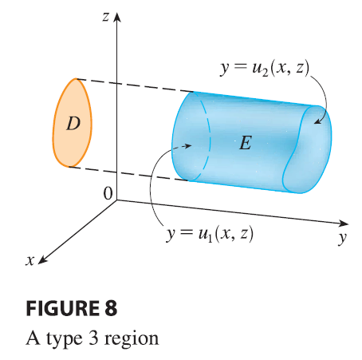

Finally, a type 3 region is of the form \[ E = \{(x, y, z) | (x, z) \in D, u_1(x, z) \le y \le u_2(x, z)\} \] where \(D\) is the projection of \(E\) onto the \(xz\)-plane, \(y = u_1(x, z)\) is the left surface, and \(y = u_2(x, z)\) is the right surface (see Figure 8). For this type of region we have \[ \iiint_E f(x, y, z) dV = \iint_D \left[ \int_{u_1(x,z)}^{u_2(x,z)} f(x, y, z) dy \right] dA \tag{11} \] In each of Equations 10 and 11 there may be two possible expressions for the integral depending on whether \(D\) is a type I or type II plane region (and corresponding to Equations 7 and 8).